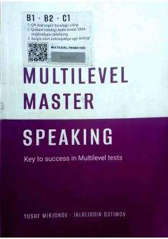

MMMultilevel imtihonining Speaking bo'limiga tayyorlanish uchun amaliy qo'llanma.
Mazkur qo'llanma Multilevel imtihonining Speaking (gapirish) bo'limiga tayyorlanish uchun mo'ljallangan bo'lib, savol turlari va ularga qanday javob berish kerakligi haqida batafsil ma'lumot beradi. Kitobda A1-A2 va boshqa darajadagi savollarga munosib javob berish strategiyalari tushuntirilgan. Mualliflar Yusuf Mirjonov va Jaloliddin Qutimov tomonidan tuzilgan ushbu kitob test topshruvchilar uchun muhim qo'llanma hisoblanadi.